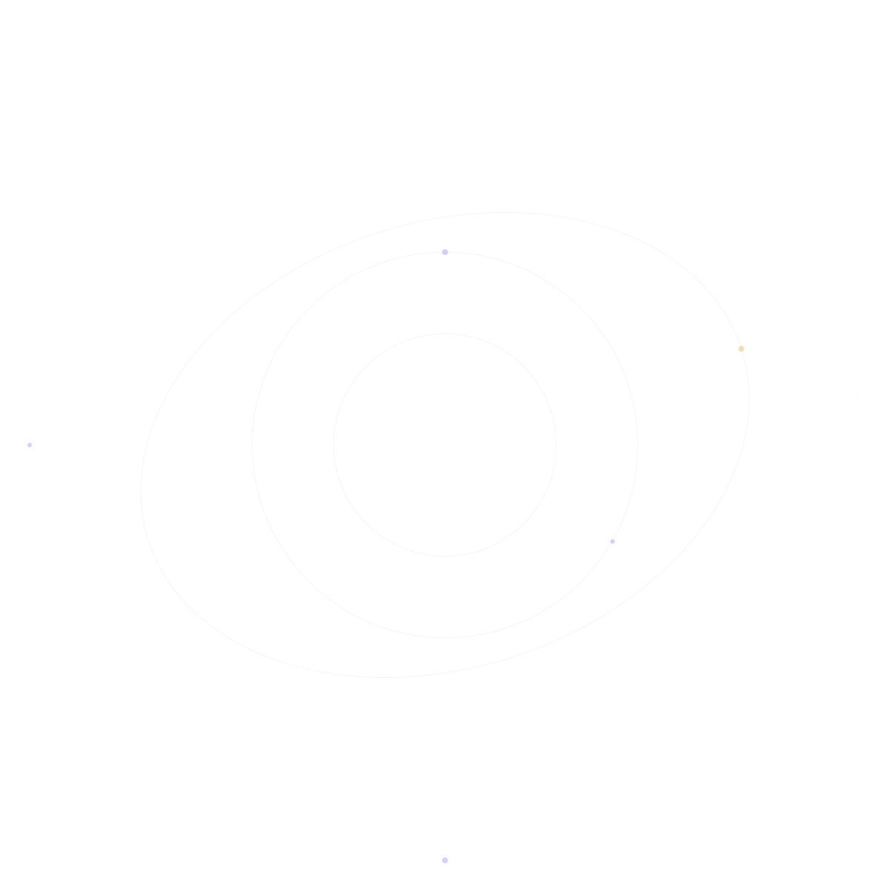
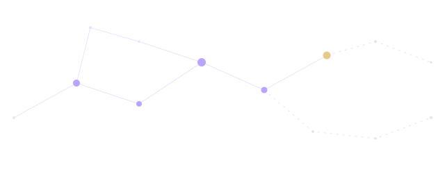

0 words
Untitled story
Raw voicetranscript before any AI processing — edit freely
SpeakTap the microphone and say your idea



Where human imagination
meets AI.
AI can suggest. The writer always has final control.
Turn this line into
↑ ↓ and Enter to choose · Esc to cancel